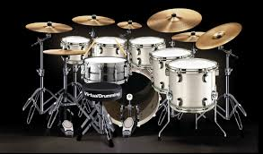

drums

The drum is a member of the percussion group of musical instruments.
In the Hornbostel-Sachs classification system, it is a membranophone.
Drums consist of at least one membrane, called a drumhead or drum skin, that is stretched over a shell and struck, either directly with the player's hands, or with a drum stick, to produce sound.
There is usually a resonance head on the underside of the drum, typically tuned to a slightly lower pitch than the top drumhead.
Other techniques have been used to cause drums to make sound, such as the thumb roll.
Drums are the world's oldest and most ubiquitous musical instruments, and the basic design has remained virtually unchanged for thousands of years.